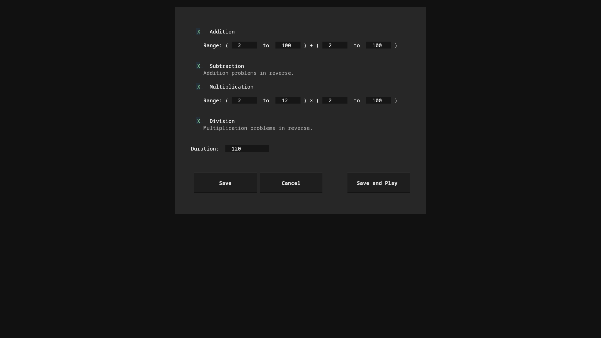
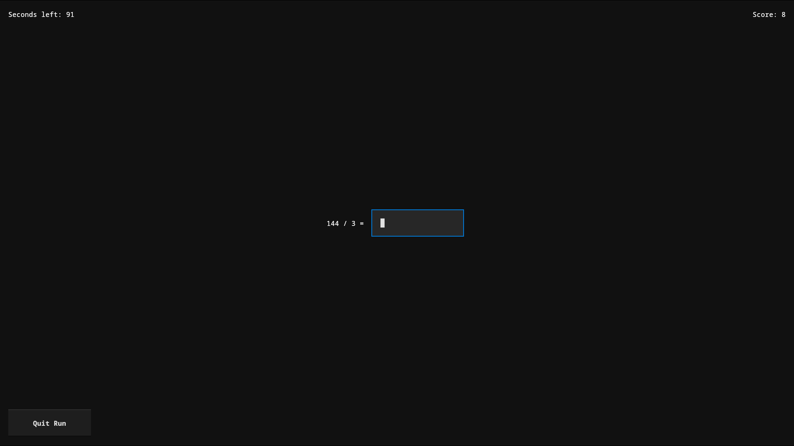

A terminal clone of Zetamac, the timed mental-math arithmetic trainer, built with Textual.


zetamac-py provides the core Zetamac gameplay loop in a terminal user interface, with local run history and replay functionality:
Requires Python 3.10+.
git clone https://github.com/yaofanfish/zetamac-py.git
cd zetamac-py
pip install -e .
Or install directly with pip:
pip install zetamac-py
(Once published to PyPI — see Roadmap.)
Launch the app:
zetamac-py
From the main menu:
| Item | Description |
|---|---|
| Settings | Enable/disable operations, set number ranges, set round duration |
| Play | Start a timed round |
| Replay | Browse recent runs and replay one problem-by-problem |
| Replay Hardest | Replay the highest-scoring run |
| View Runs | Browse run history and inspect raw run data |
| Quit | Exit the app |
During a round, type an answer and press Enter; correct answers advance to the next problem automatically. Press q or Esc at any time to end the round early.
Settings are stored at ~/.config/zetamac-py/settings.json and can be edited through the in-app Settings screen or by hand. Run history is stored in a SQLite database at ~/.local/share/zetamac-py/runs.db.
Contributions toward any of the above, or other proposals, are welcome — see below.
Issues and pull requests are welcome.
git clone https://github.com/yaofanfish/zetamac-py.git
cd zetamac-py
pip install -e ".[dev]"